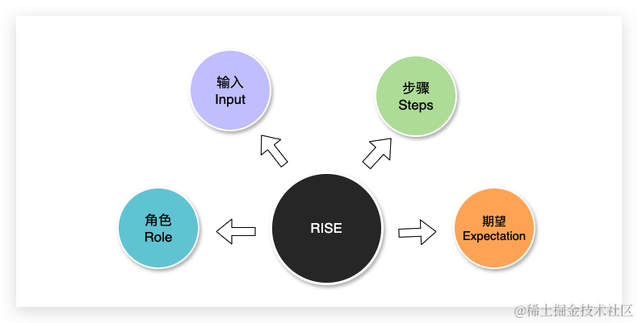
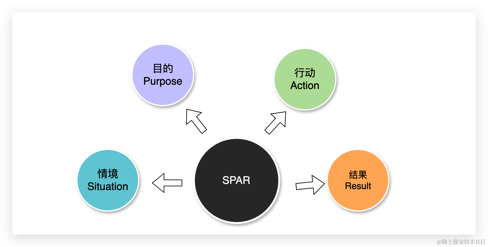
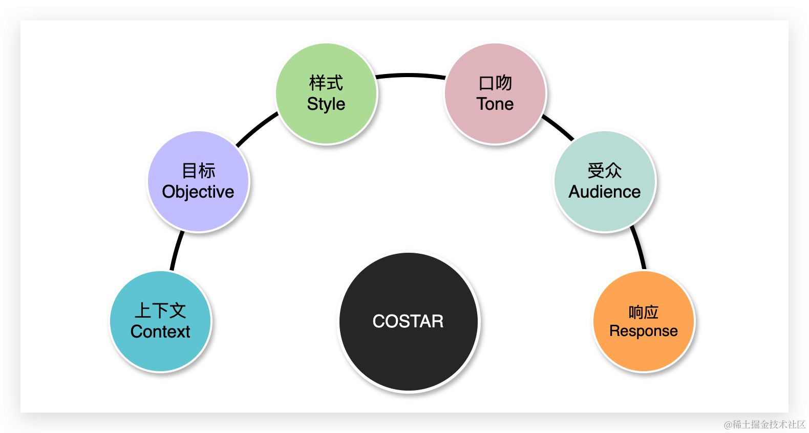
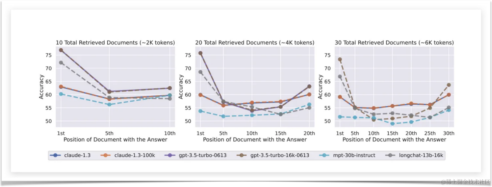
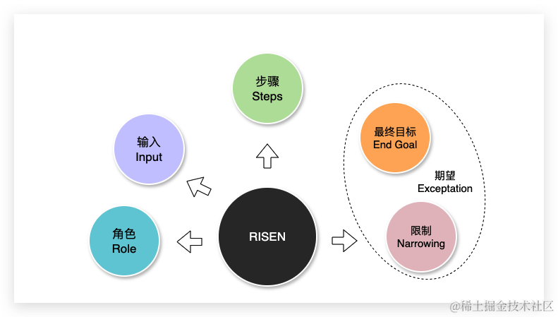

一、前言
在提示词的实际应用中，许多人喜欢使用各种提示词框架，甚至对某一个提示词框架“情有独钟”。
从战略角度来看，这些框架体现了战略思想，例如专注聚焦、清晰具体和避免歧义。从战术角度来看，这些框架则是提示词结构化的具体表现形式。尽管形态各异，它们都通过结构化的方式将完成特定任务所需的关键信息传递给大语言模型，同时辅以前文介绍的其他实用战术技巧以增强效果。
本文重点介绍三个经典的提示词框架：RISE、SPAR、COSTAR。读者可以根据实际场景选择最适合的框架，也可以在经典框架基础上进行改造，甚至根据自己的经验和喜好开创新的框架。
二、常见提示词框架
2.1 RISE 框架
框架介绍

RISE 框架通过整合Role(角色)、Input(输入)、Steps(步骤)和Expectaion(期望)四个关键要素：
-
角色（Role） ：定义 AI 在提示上下文中的角色，明确其功能以及应从哪个角度来处理任务。
-
输入（Input） ：指定 AI 在制定响应时应考虑或利用的信息、数据或资源。
-
步骤（Steps） ：概述 AI 在处理提示时应遵循的一系列操作或流程，提供实现预期输出的清晰途径。
-
期望（Expectation） ：描述 AI 响应的预期结果、格式或细节，为成功交互设定基准。
RISE 框架适用于需要明确角色、详细输入、具体步骤和预期结果的复杂任务场景，如技术文档编写、业务流程优化等。
缺点
RISE 架构也存在很多缺点：
- 复杂度增加
解释：RISE 框架通过引入角色、输入、步骤和期望四个要素，试图系统化和精细化提示词。这虽然能提高准确性和系统性，但也使得提示词变得更加复杂，可能增加用户的使用门槛，尤其是对于初学者来说，学习和掌握这些概念需要时间和经验。 示例：例如，对于一个简单的查询任务，使用者可能需要明确指定 AI 的角色、提供详尽的输入信息、定义步骤和期望结果，这可能会使简单任务变得繁琐。
- 灵活性降低
解释：由于 RISE 框架强调结构化和规范化，可能限制了提示词的灵活性和创造性。在一些非结构化任务或需要创新解决方案的场景中，过于严格的框架可能会限制AI的发挥。
示例：在创意写作或需要发散思维的任务中，严格按照步骤执行可能会限制 AI 生成多样化和创新性的内容。
- 上下文适应性差
解释：RISE 框架对角色、输入、步骤和期望的要求可能在处理动态变化的上下文时显得不够灵活。如果上下文信息频繁变化，或任务要求不断更新，RISE 框架可能需要频繁调整，增加了使用成本。
示例：在实时客服系统中，用户的问题和上下文可能随时变化，严格的 RISE 框架可能无法快速适应这些变化，从而影响响应效率。
- 过于依赖用户提供详细信息
解释：RISE框架需要用户提供详细的输入信息和明确的期望结果，对于一些用户来说，可能无法准确描述或提供这些信息，从而影响AI的表现。
示例：一些用户在使用 AI 时可能只知道大致需求，却无法明确描述详细的输入数据和预期结果，这种情况下 RISE 框架的效果可能大打折扣。
提示词示例
下面是使用 RISE 框架实现“文章润色和优化”任务的提示词示例：
## 角色
充当一名专业编辑，帮助润色和优化文章。 ## 输入
<这里需要提供初稿和目标读者信息>。 ## 步骤
逐段检查语法、句子结构和逻辑连贯性，提出修改建议。 ## 期望
最终输出一篇逻辑清晰、语言流畅、符合目标读者期望的文章。
2.2 SPAR 框架
框架介绍

SPAR 代表 Situation（情境）、Purpose（目的）、Action（行动）和 Result（结果） 四大要素：
-
Situation（情境） ： 从描述当前情境开始，介绍与当前任务相关的背景信息或现状，帮助 AI 理解构建响应的基础。
-
Purpose（目的） ： 清晰陈述互动的目的或目标。你希望通过 AI 的帮助实现什么？明确这一点可以确保 AI 的努力与你的目标保持一致。
-
Action（行动） ： 指定你希望 AI 执行的行动或任务。这可以是从生成内容到分析数据或解决特定问题。行动越清晰，AI 的响应就越有针对性。
-
Result（结果） ： 设想期望的结果。成功的样子是什么？详细说明预期结果有助于衡量 AI 响应的效果，确保其符合你的要求。
SPAR 框架适用于那些有明确目标和预期结果的任务，如市场调研、产品设计等。
缺点
SPAR 框架也存在一些缺点：
- 需要初步细节
有效使用 SPAR 需要在详细描述情境和期望结果方面投入前期工作，这可能比较耗时。
- 可能限制探索性
专注于具体行动和结果可能会限制 AI 的创造性或探索性响应的潜力。
提示词示例
下面是使用 SPAR 框架实现“智能家居设备问卷调查”任务的提示词示例：
我们是一家科技公司，正在开发一款智能家居设备。
请生成一份调查问卷，旨在收集用户对智能家居设备的使用需求和体验反馈。
问卷应包括以下内容：用户的基本信息、他们目前使用的智能家居设备类型、最常用的功能、遇到的问题和痛点，以及他们对未来设备的新功能期望。
问卷应尽量简洁明了，确保高填写率。
2.3 COSTAR 框架
框架介绍
COSTAR 是一个高效的提示词框架，旨在通过提供Context（上下文) 、明确 Objective (目标) 、指定 Style(样式) 和Tone(口吻)、识别目标Audience(受众) 以及规定Response（响应）格式，来指导大型语言模型（LLM）生成更精确和有针对性的响应。

Context（上下文） : 提供背景信息，帮助 LLM 理解特定场景，从而生成更相关的响应。这对于复杂任务尤其重要，因为上下文可以减少歧义，确保生成的内容更符合实际需求。
Objective（目标） :明确定义任务，集中 LLM 的注意力，避免生成无关或不相关的内容。清晰的目标有助于提高响应的质量和准确性。
Style（样式） :指定所需的书写风格，确保生成的文本与所需的格式和风格一致。这对于品牌一致性和专业性要求高的场景尤为重要。
Tone（口吻） : 设定口吻使生成的内容与预期的情感基调一致，从而更好地与读者产生共鸣。不同的任务可能需要不同的情感色彩，设置口吻可以帮助实现这一点。
Audience（受众） : 识别目标受众使生成的内容更符合特定读者群体的需求和期望，增加内容的吸引力和相关性。了解受众有助于调整内容的复杂度和表达方式。
Response（响应） : 指定响应格式可以确保生成的内容符合技术或业务需求。例如，指定生成 JSON 格式的数据有助于直接用于应用程序开发，提高工作效率。
COSTAR 框架适用于需要详细背景信息和明确响应格式的任务，确保生成内容与预期的样式和受众一致，如内容创作、教育培训等。
缺点
COSTAR 提示词的主要缺点：
- 过度依赖上下文（Context） :
提供过多背景信息可能会导致 LLM 生成的响应过于复杂或偏离主要任务。背景信息过多可能增加处理时间和资源消耗。
- 目标定义不清（Objective） :
如果目标定义不够明确或过于模糊，可能会导致生成的内容不符合预期，LLM 难以聚焦，降低响应的质量。
- 风格限制（Style） :
过于严格的风格要求可能限制 LLM 的创造性，使生成的内容显得呆板或缺乏灵活性。此外，不同任务可能需要灵活调整风格，过于僵化的风格设置可能不适用于所有场景。
- 口吻控制困难（Tone） :
对于一些复杂或多层次的任务，设置单一的口吻可能不足以传达所有信息。LLM 可能难以在同一任务中平衡多种情感基调。
- 受众识别挑战（Audience） :
准确识别和描述目标受众可能是一个挑战。如果受众描述不准确，生成的内容可能无法有效地触及预期读者群体。
- 响应格式限制（Response） :
过于严格的格式要求可能限制 LLM 的灵活性，尤其是在需要生成创意或非结构化内容的场景中。格式要求可能增加生成复杂度，导致响应速度变慢。
提示词示例
下面是使用 COSTAR 框架实现“新订阅服务邮件回信”任务的提示词示例：
请你为我们的客户服务团队撰写一封回复邮件，解释新订阅服务的特点和优势，并解答常见问题。
上下文：公司推出了新的订阅服务，现有客户有疑问，需要客服提供详细解答。
目标：撰写一封回复邮件，详细解释新订阅服务的特点（主要特点包括...）和优势（主要优势有...），并解答常见问题。
风格：简明扼要，专业且友好。
口吻：热情和乐于助人。
受众：现有的公司客户，可能对技术和服务细节不太熟悉。
响应格式：邮件应包括以下内容：问候语、订阅服务的详细介绍、常见问题解答、感谢客户和进一步的联系方式。
现在开始撰写邮件吧。
三、经验
3.1 破除格式迷信
在学习和使用提示词框架时，不必拘泥于官方示例的形式。有些提示词框架教程可能严格按照“要素：内容”来编写，其实只要模型能够清楚地理解意图，具体形式并不重要，并不一定要这么写。
当提示词较短时，可以不使用明确的要素区分，甚至不必考虑使用哪一个具体的提示词框架。如果提示词较长，不同要素可能会混淆，此时需要灵活变通，例如采用 Markdown 标题形式，或使用序号排列等方式。
3.2 要素顺序可灵活调整
在使用提示词框架时，要灵活变通，不必严格按照官方示例的顺序编写提示词。例如，在 RISE 框架中，官方示例将“输入”放在第二位，但在实践中，如果提示词不长，可以放在第二位；如果提示词较长，推荐将“输入”放在最后。

根据《Lost in the Middle: How Language Models Use Long Contexts》论文，目前的大语言模型普遍存在位置偏见，即对上下文的开头（primacy bias）和结尾（recency bias）信息更为敏感，而对中间部分的信息处理能力较弱。在实际应用中，当提示词过长时，将用户输入放在中间，可能会因模型注意力机制的缺陷，丢失一些关键信息或将示例与用户输入混淆，从而影响模型的回答效果。因此，更推荐将用户输入部分放在提示词的末尾。
3.3 继承的基础上勇于创新
每种提示词框架都可能存在变种。例如，RISE 框架的变种 RISEN 将期望（Expectation）拆分成两个要素：
- 最终目标（End Goal） ：定义最终目标，引导 AI 的焦点。
- 限制（Narrowing）： 设置合理的约束或限制更精确地控制响应。

在 RISE 框架中，虽然有期望（Expectation）设定响应的预期结果，但这可能不足以引导 AI 完全对准最终目标，特别是在复杂任务中。通过增加最终目标（End Goal），可以明确引导 AI 聚焦于最终输出结果，避免执行过程中偏离目标，提高响应的精确度和一致性。在一些任务中，AI 可能会生成过于宽泛或冗长的响应，缺乏针对性和可操作性。增加限制（Narrowing）可以设置合理的约束条件，如字数限制、内容范围等，从而使 AI 的响应更精炼、更符合实际需求。
大家在实践提示词框架时可以将多种技术融入进来，如与 RAG 技术、加示例等技巧相结合，实现更好的效果。也可以根据自己的经验和喜好，对现有提示词框架进行优化，创造出更适合、更高效的提示词框架。
四、总结
本文介绍了三种常见的提示词框架：RISE、SPAR 和 COSTAR。读者可以参考文末的“Unveiling the Power of AI Prompt Frameworks”或其他平台，进一步学习和掌握更多提示词框架。需要注意的是，每种框架都有其特定的应用场景和优缺点，在实践中应根据实际情况选择最适合的框架。
市面上虽然存在形式多样的提示词框架，这些框架基本都遵循前面讲到的提示词战略思想，都是各种战术技巧的灵活组合。我们不要被具体形式所迷惑，我们要善于透过现象看本质，在实际编写提示词时，建议灵活运用格式和要素的顺序，不必拘泥于固定模式，可根据自身经验和需求进行创新。
你最喜欢的提示词框架是哪个？你还知道哪些好用的提示词框架？欢迎在评论区交流讨论。
练习题
根据你的实际需求，从 RISE、SPAR 和 COSTAR 提示词框架中选择一种最适合的框架，编写对应的提示词并验证其效果。
拓展阅读：
COMMUNITY NOTES
读者评论
这篇文章暂时没有读者留言。